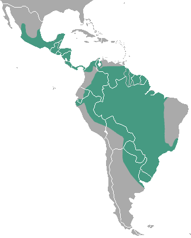

Lontra

Nome científico: (Lontra longicaudis Olfers, 1818)
Nome comum: Lontra, lontra-neotropical.
Classificação biológica:
Domínio: Eukaryota.
Reino: Animalia.
Filo: Chordata.
Classe: Mammalia.
Ordem: Carnivora.
Família: Mustelidae.
Gênero: Lontra.
Espécie: Lontra longicaudis.
Nutrição: Carnívoro.
Hábitos alimentares: Alimenta-se de peixes, crustáceos, anfíbios e pequenos vertebrados.
Morfologia do corpo: Possui corpo alongado e hidrodinâmico, com pelagem marrom densa e resistente à água. Mede entre 50 e 90 cm de comprimento, com uma cauda de 30 a 50 cm. Pesa entre 5 e 15 kg.
Comportamento: É um animal semiaquático, excelente nadador e mergulhador. Pode ser solitário ou formar pequenos grupos familiares.
Principais Presas: Peixes, crustáceos, anfíbios e pequenos vertebrados.
Principais Predadores: Grandes felinos, jacarés e humanos (caça ilegal e destruição do habitat).
Locais habitados
Distribuição:Vive nos biomas Pantanal, Mata Atlântica, Cerrado e Amazônia.
Habitat: Habita rios, lagos, manguezais e áreas alagadas, preferindo águas limpas e bem preservadas.
Reprodução: A gestação dura cerca de 60 a 70 dias, resultando em ninhadas de 1 a 5 filhotes, que permanecem com a mãe por até um ano.